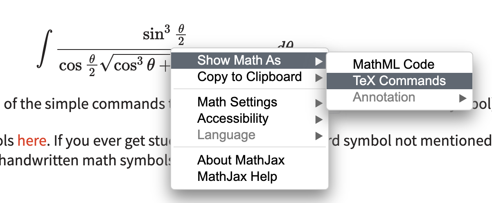

LaTeX primer
Posted on Sun 21 March 2021 in Programming
This is a short getting started article on LaTeX; Recently, one of our courses involved a bit of LaTeX work, and this is meant to be a short introduction on how to use LaTeX to explain one's working.
Getting Started
LaTeX (Pronounced lay-tech, stylized $\LaTeX$), at it's core, is merely a text formatting system. One of the main differences between LaTeX and other programs such as MS word is that LaTeX is a WYSIWYM (What you see is what you mean) system, as compared to WYSIWYG (What you see is what you get) systems. This means that you won't be able to see your changes while editing, say LaTeX in your moodle explanation.
To test small LaTeX snippets without installing anything, you can use quicklatex.com or texrendr.com. The former renders it using an actual LaTeX engine, while the latter uses MathJax (there are minor differences, which I'll get to later). For now, both are equivalent, and you should be able to use both without problems. You could also try testing with the TeXit discord bot, on one of the many servers which have it. It also works if you Directly message it your code, which is nice.
Basic commands
Getting started is quite easy: here's an example of some LaTeX code which does stuff
\int \frac{dx}{\sqrt{1-x^2}} = \sin^{-1}(x) + c
and here's the output it generates:
$$\int \frac{dx}{\sqrt{1-x^2}} = \sin^{-1}(x) + c$$
Let's go over what the code does, command by command:
- The
\(backslash) is used to represent a command: prefixing a word with a backslash identifies it as a command, and commands are used to either render specific symbols (\int,\alpha) or typeset text in a specific way (\frac,\sqrt) \intrenders an integral sign, and\fraccreates a fraction of the form\frac{numerator}{denominator}. Braces are used in latex to demarcate parts of a command. They are optional, and in a pinch you could skip them altogether; for example,\frac 1nrenders as $\frac 1n$- The
\sqrtsign is self-explanatory. Note that $\sin$ is prefixed with a backslash. There's a very minor difference here:\sinwould render $\sin$ (upright), whilesinwould render $sin$ (slanting). Hence, it's a good practice to prefix trig functions with a backslash. Raising -1 to the power requires explicit braces, as\sin^-1would render $\sin^-1$ rather than $\sin^{-1}$, which is not what we need.
This small example covers most of what we'll use. The real power comes from the fact that by nesting these commands, we can create as complex an expression as we like. Here's an example:
\int \frac{\sin^3\frac\theta 2}{\cos\frac\theta2 \sqrt{\cos^3\theta + \cos^2\theta + \cos\theta}} d\theta
gives us $$\int \frac{\sin^3\frac\theta 2}{\cos\frac\theta2 \sqrt{\cos^3\theta + \cos^2\theta + \cos\theta}} d\theta$$
Notice how this is only made up of the simple commands that we used (and \theta
to render the $\theta$ symbol)
There's a nice list of latex symbols here. If you ever get stuck, or come across a weird symbol not mentioned here, Detexify is a tool for converting handwritten math symbols into LaTeX, so use that.
Environments
An environment is used to format a block of text in latex. Environments
generally begin with a \begin tag and end with a \end tag.
Let's say you have a set of linear equations and you want to align all of them so that they look neat and tidy, something like the example below:
$$ \begin{align} 5x + y - 3z &= 6 \\ 2x + 3y + 4z &= 8 \\ x + 9y + 7z &= 3 \end{align} $$
The way to do this is using the align environment, The code to generate this
is below:
\begin{align}
5x + y - 3z &= 6 \\
2x + 3y + 4z &= 8 \\
x + 9y + 7z &= 3
\end{align}
Some key points here:
- The
\begin{align}and\end{align}commands demarcate the environment: similar to the<body>and</body>tags in HTML. There are different environments, such ascenterandbmatrix, but we'll get to those in a minute - The
\\command tells latex to end that equation and start the next equation on a new line. - The
&character tells latex to align the commands at that character. A small exercise for the reader would be to align the equations at the yth term (eg5x + &y - 3z = 6and so on) and see what happens. Note that the meaning of&changes depending on context, but in an align environment, this is what it's used for.
Another example: say you want to express this set of equations in a matrix. Something like this:
$$ \begin{bmatrix} 5 & 1 & -3 \\ 2 & 3 & 4 \\ 1 & 9 & 7 \\ \end{bmatrix} \begin{bmatrix}x \\ y \\ z\end{bmatrix} = \begin{bmatrix} 6 \\ 8 \\ 3 \end{bmatrix} $$
We use the bmatrix environment for this. The code is:
\begin{bmatrix}
5 & 1 & -3 \\
2 & 3 & 4 \\
1 & 9 & 7 \\
\end{bmatrix}
\begin{bmatrix}x \\ y \\ z\end{bmatrix}
=
\begin{bmatrix} 6 \\ 8 \\ 3 \end{bmatrix}
Notice the different use of & here.
Let's say you want to solve this system of equations using cramer's rule, and
want to write it as a determinant. Here's how that's done, using array:
$$
\Delta = \left| \begin{array}{ccc}
5 & 1 & -3 \\
2 & 3 & 4 \\
1 & 9 & 7 \\
\end{array} \right|
$$
\Delta = \begin{array}{|ccc|}
5 & 1 & -3 \\
2 & 3 & 4 \\
1 & 9 & 7 \\
\end{array}
Notice how array has an additional set of parameters here: {|ccc|} denotes
that this array has three columns, and that we want vertical lines at the start
of the first column and the end of the last column. If we wanted something
like a table, then {c|c|c} is what we would have used. Inserting horizontal
lines in an array can be done using \hline.
Some more tips
- If you want to add a small space between terms in math mode, prefix the space
with a backslash. LaTeX ignores whitespace and a few special characters, so
displaying them requires that we escape them with a backslash, similar to
most other programming languages. For example,
\int x dxgives $\int x dx$, whereas\int x\ dxgives $\int x\ dx$. Similarly, for special characters, try printing5%in latex and be surprised :) how would you display the % symbol? - If you come across an interesting LaTeX snippet online (rendered with MathJaX), right-click on it to open up the MathJaX context menu, and click on show math as -> TeX commands to see the code that went into creating that. This is a great way of learning LaTeX. You could skim through some of the math-heavy content in this blog to get a taste of that </self-promotion> 
- Brackets are not auto-resizing in latex. Say you want to write the product
of two integrals, such as
(\int x\ dx)(\int x^2\ dx).This gives us very puny brackets: $$(\int x\ dx)(\int x^2\ dx)$$ If we have to remedy this, we use the\left(and\right)commands to auto-resize the enclosing brackets to fit the content within: $$\left(\int x\ dx\right)\left(\int x^2\ dx\right)$$ This is much nicer, and works with other brackets as well
Difference between LaTeX and MathJax
The pero few among you must have noticed that this was barely a LaTeX introduction
(sorry for the misnomer :P) There is quite a bit of difference between MathJaX
and LaTeX; LaTeX is an end-to-end typesetting system, while MathJaX is a javascript
library that displays math online. A typical LaTeX document begins with the
\begin{document} environment, and a few imports before that. However, this
was meant to be a tutorial on merely typesetting math using a few LaTeX commands,
and I think it serves it's purpose. There are quite a few links and resources
in the conclusion section, which you should check out for more info on LaTeX.
Note that MathJaX requires you to enclose math within either $ $ or \( \)
for inline math and $$ $$ or \[ \] for displayed math (centered, on a
new line). Don't forget to do this, otherwise the math would not render.
Concluding notes & References
LaTeX is far larger than what I've covered in this article, but hopefully this shows you that there exists an elegant way to typeset math. For more information, check out the extensive LaTeX documentation on Overleaf. If you have any doubts, check out the TeX community over at tex.stackexchange.com, there's a high chance that your doubt is already answered.
Happy Math-ing!